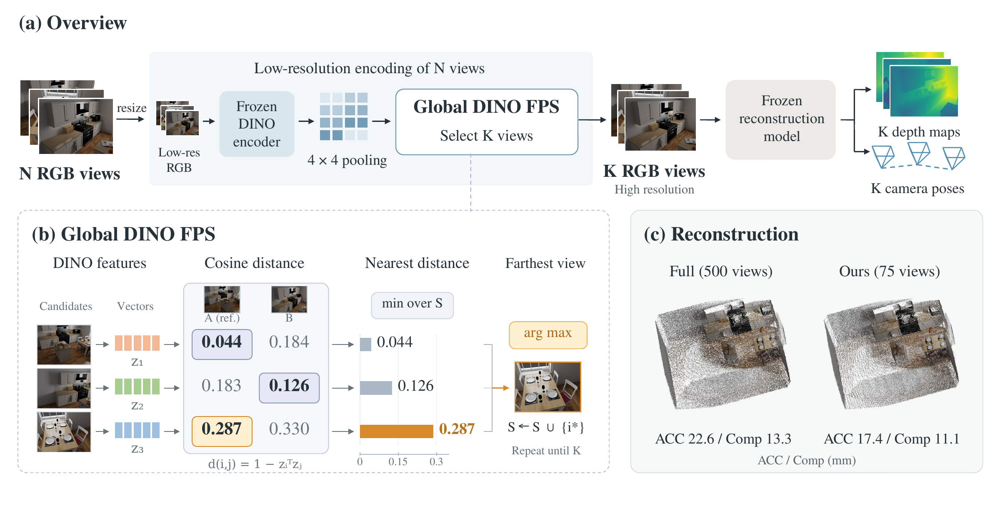
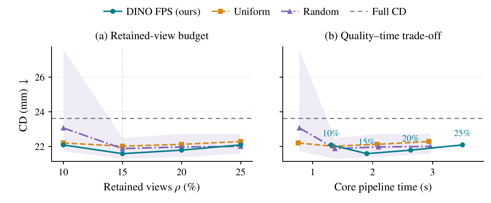
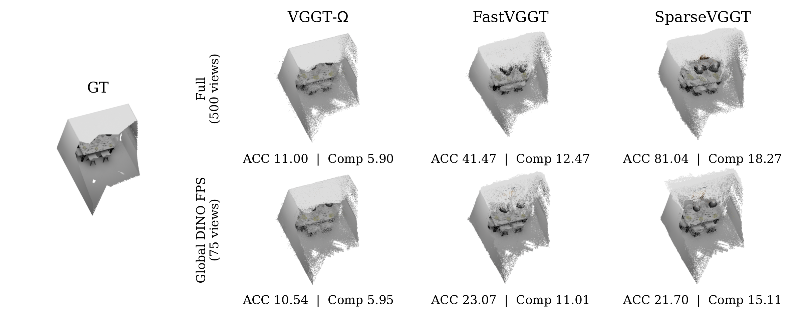
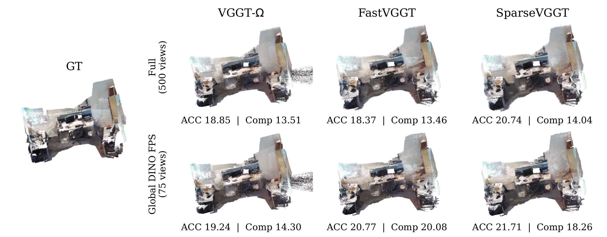
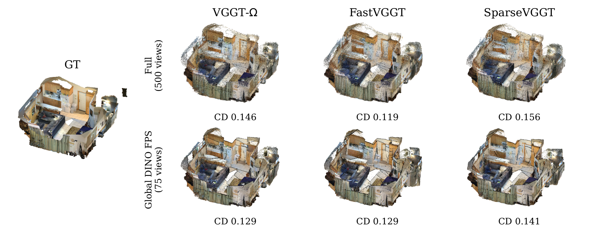

Encode all views at low resolution
The frozen VGGT-Ω image encoder processes images at 224 × 288. Patch features are pooled into 4 × 4 spatial bins, normalized per bin, concatenated, and normalized again to form a DINO descriptor for each view.
Anonymous project page
Select representative views. Reconstruct the full scene.
A training-free input selector for frozen visual geometry models.
of candidate views retained
core-pipeline speedup on ScanNet-50
lower peak allocated memory on ScanNet-50
VGGT-Ω on NVIDIA H200 · candidate limits of 300, 500, and 1000 · selection overhead included

The idea
Feed-forward visual geometry models jointly predict scene geometry and camera poses, but dense global attention becomes costly as the number of input views grows. We investigate whether a small representative subset can recover the scene represented by the full input collection. Our exploratory studies show that sparse subsets retain much of the geometric coverage, while higher thresholded descriptor coverage does not consistently improve reconstruction.
We introduce VGGT-ρ, a training-free framework that selects a user-specified fraction of views through global farthest-point sampling in low-resolution DINO descriptor space. Using descriptors from the frozen VGGT-Ω image encoder, selection starts from a fixed reference view and repeatedly adds the candidate farthest from its nearest selected representative. The selected RGB images are passed in their relative input order to a frozen high-resolution reconstruction model.
Experiments on 7 Scenes, NRGBD, ScanNet-50, and Tanks and Temples show that retaining 15% of candidate views largely preserves VGGT-Ω reconstruction quality over the full-input scene domain and pose quality on the selected views. On ScanNet-50, core-pipeline speedups reach 13.0×–24.0×, with 63.3%–73.8% lower peak allocated GPU memory, including low-resolution encoding and selection overhead. Transfer experiments with FastVGGT and SparseVGGT further demonstrate the applicability of view selection across backbones, with quality trade-offs depending on the dataset and input budget.
How it works
Given N candidate images and a retained-view fraction ρ, select K = ⌈ρN⌉ views, including the first input as the reference.
The frozen VGGT-Ω image encoder processes images at 224 × 288. Patch features are pooled into 4 × 4 spatial bins, normalized per bin, concatenated, and normalized again to form a DINO descriptor for each view.
Compute pairwise cosine distances once. Starting from the reference view, repeatedly select the candidate with the largest distance to its nearest selected representative until K views are selected.
Assemble the selected RGB images in their relative input order. The reconstruction model predicts depth and cameras for these views. Reconstruction is evaluated against the same full-scene domain as Full.
The selection rule
i* = arg maxi ∉ S minj ∈ S (1 − ziTzj)
Here z is a normalized DINO descriptor and S is the selected set. Ties favor the smaller input index. Descriptors and distances are reused within each selection call.
Quality & efficiency
Full and + VGGT-ρ share the same frozen backbone. Reconstruction quality covers the full-input scene domain; pose comparisons use the same selected views.
| Candidate limit | Input | High-res. views | CD (m) ↓ | Time (s) ↓ | Peak allocated (GiB) ↓ |
|---|---|---|---|---|---|
| 300 | Full | 300 | 0.198 | 13.233 | 21.29 |
| + VGGT-ρ | 45 | 0.202 | 1.015 | 7.81 | |
| 500 | Full | 430–500 | 0.216 | 33.797 | 32.61 |
| + VGGT-ρ | 65–75 | 0.216 | 1.927 | 10.14 | |
| 1000 | Full | 430–1000 | 0.206 | 115.736 | 60.92 |
| + VGGT-ρ | 65–150 | 0.204 | 4.815 | 15.97 |
Candidate limits are upper bounds; actual input counts vary by scene. Time is the equal-scene mean of formal-round medians. Memory is the maximum allocated peak across scenes and formal rounds, including the resident model and selector.
| Dataset | Input | ACC ↓ | Comp ↓ | NC ↑ | Time (s) ↓ |
|---|---|---|---|---|---|
| 7 Scenes | Full | 0.019 | 0.016 | 0.628 | 117.1 |
| + VGGT-ρ | 0.019 | 0.016 | 0.631 | 4.7 | |
| NRGBD | Full | 0.016 | 0.009 | 0.865 | 114.1 |
| + VGGT-ρ | 0.014 | 0.008 | 0.888 | 4.6 |
Equal-weight averages over 18 test sequences for 7 Scenes and nine scenes for NRGBD. Values follow the manuscript's reported precision.
At the ScanNet-50 1000-frame limit, VGGT-Ω AUC@5/15/30 changes from 23.7/59.1/76.1 to 24.8/60.4/76.9 (%). On complete Tanks and Temples sequences, mean AUC@30 changes from 76.2% to 77.7%.
The same selector applies to FastVGGT and SparseVGGT. Quality trade-offs depend on the dataset and budget: both improve normal consistency on 7 Scenes while incurring higher completeness error. Transfer timings in the manuscript are estimates from separately measured selection and inference costs.
For VGGT-Ω, wall-clock timing runs from prepared CPU image tensors to high-resolution depth and camera predictions returned to the CPU. It includes low-resolution encoding, descriptor readout, distance computation, global FPS, subset assembly, high-resolution inference, and required data transfers. CUDA is synchronized at the boundaries.
Model loading, image decoding and multiscale input preparation, point-cloud processing, and quality evaluation are excluded. Each measured round recomputes encoding and selection.
Ablation study
On nine NRGBD scenes, global FPS achieves its lowest mean CD among the tested 10%–25% retention settings at 15%. More views increase computation without a monotonic improvement in reconstruction quality on this panel.

Qualitative results
Full and selected-input reconstructions across three backbones. Panels within each scene share the display camera, scale, point size, and sampled point count. Select a figure to inspect it at full size.


